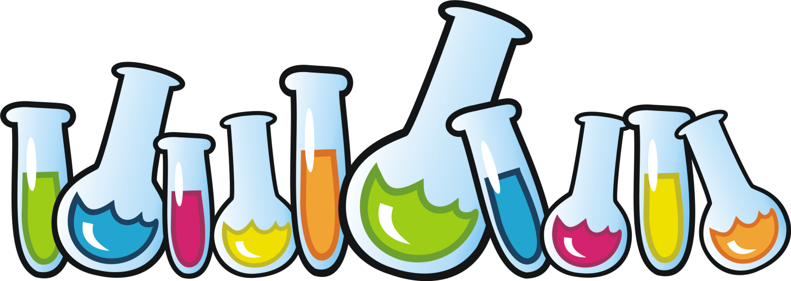
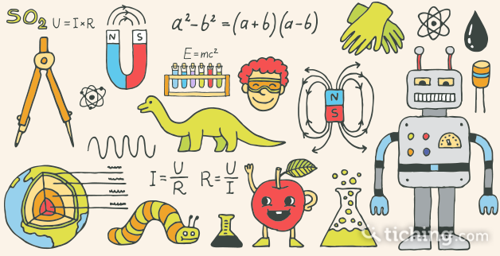
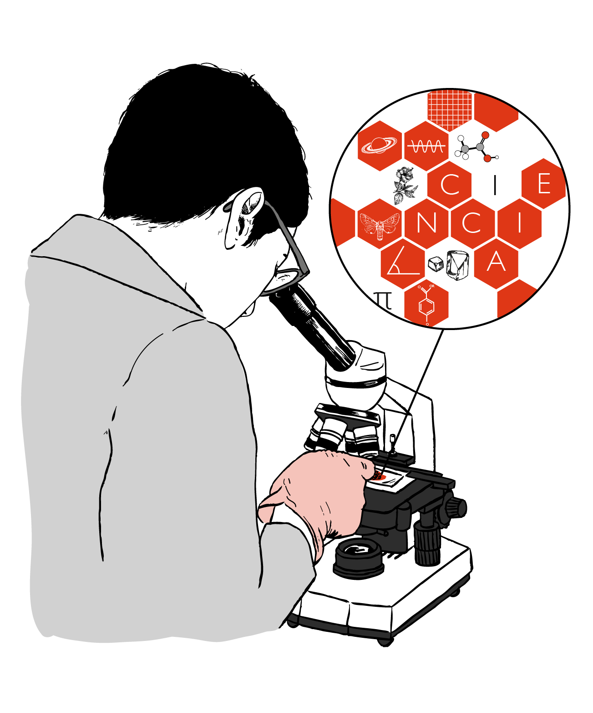
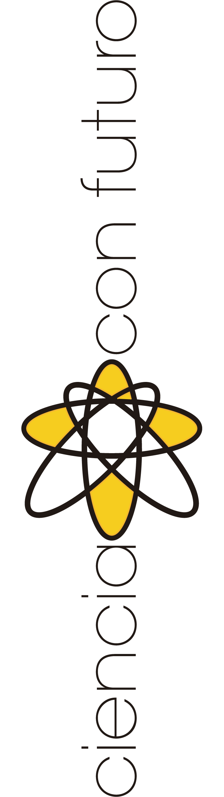

- 
-

La ciencia considera y tiene como fundamento la observación experimental. Este tipo de observación se organiza por medio de métodos, modelos y teorías con el fin de generar nuevo conocimiento. Para ello se establecen previamente unos criterios de verdad y un método de investigación.


Desde la revolución científica, el conocimiento científico ha aumentado tanto que los científicos se han vuelto especialistas y sus publicaciones se han vuelto muy difíciles de leer para los no especialistas.3 Esto ha dado lugar a diversos esfuerzos de divulgación científica, tanto para acercar la ciencia al gran público, como para facilitar la compresión y colaboración entre científicos de distintos campos.3